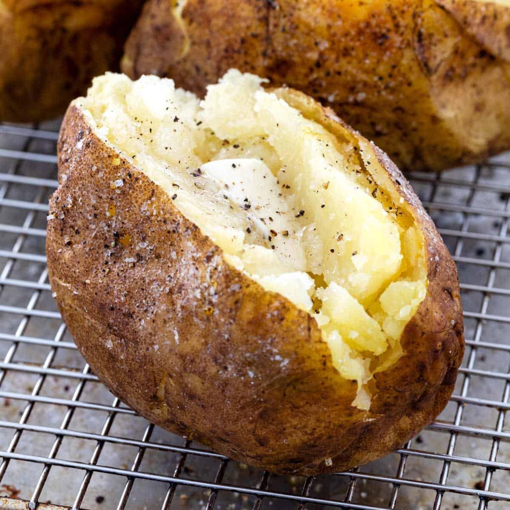

Baked Potatos

Baked potatos are easy to make in the oven, just follow these steps!:
Ingredients
Potatos
Oil
Salt
Sour Cream
- Heat the oven to 220C/200C fan/gas 7.
- Rub a little oil over each potato and put on the top shelf of the oven. Bake for 20 mins, then turn down the oven to 190C/170C fan/ gas 5 and bake for 45 mins-1 hr more until the skin is crisp and the inside soft.
- Make a cross in the centre of each potato, dollop over the soured cream and serve.
Yummy!